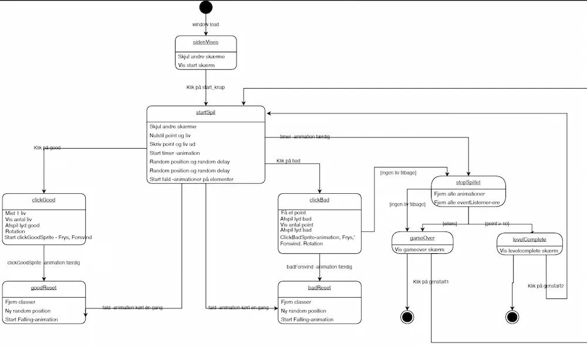
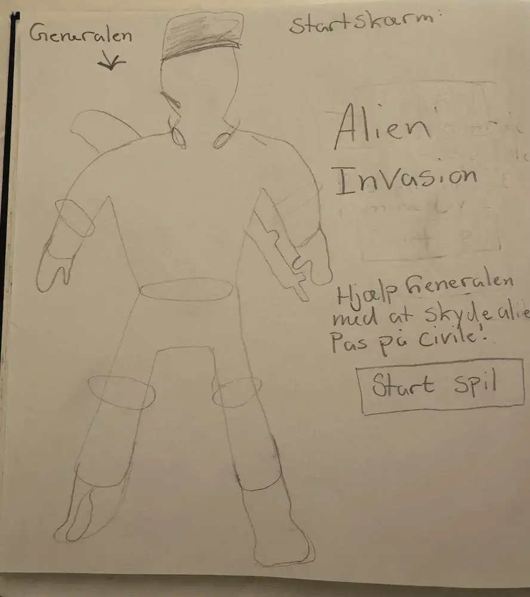
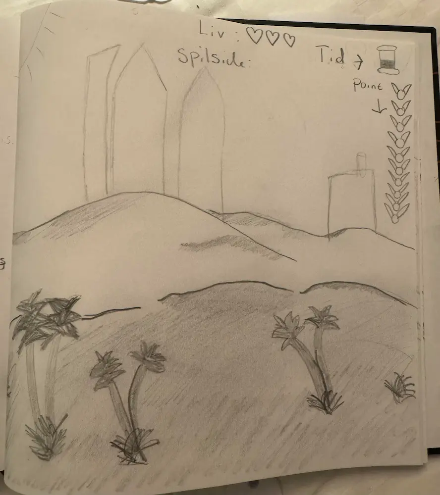
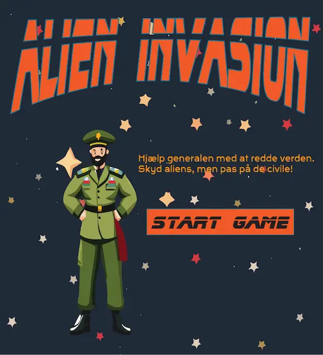
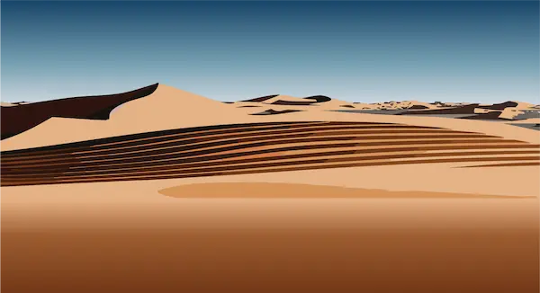

Grundlæggende animation
I tema 4, Grundlæggende animation, blev vi blandt andet introduceret til javascript. Formålet med temaet var, at vi ved brug af javascript og css animationer skulle lave et spil.
04.04.01 Temaopgave
Idégenerering
I denne opgave blev vi introduceret til teori om idegenerering. Jeg lavede øvelsen "10 ideer", og byggede videre på en idé om et zombie spil, som endte ud i mit endelige spil "Alien Invasion".
Planlægning
Til planlægningen af spillet lavede jeg et state machine diagram. Diagrammet viser, hvordan spilfunktionerne fungerer. En relativt hurtig udarbejning, som giver et enormt overblik.
Design elementer
Skitser
I opgaven skulle vi selv designe vores figurer og spilskærme. Det lærte mig at lave hurtige og brugbare skitser, som kan ses nedenfor. Det vigtige er ikke hvor pæne de er, men at få nogle ideer ned på et stykke papir, som man kan arbejde videre fra.
Skitse af forsiden
Skitse af spilsiden
Rentegning i Adobe Illustrator
Rentegning af forsiden.
Rentegning af spilsiden
Figurer
Udfra designteori om baggrunds- og karakterdesign, har jeg søgt inspiration hos "Space up graphics" til baggrunden og spilskærmen, og Kawaii til karakterdesign, som kan genkendes ved et "cute" look, hvilket skabes med teorier som "Baby bias" og "bouba-effekten".
Javascript og CSS animationer
Uden javascript og css-animationer ville spillet ikke virke, og det fyldte rigtig meget i dette tema, og det var rigtig svært og sjovt.